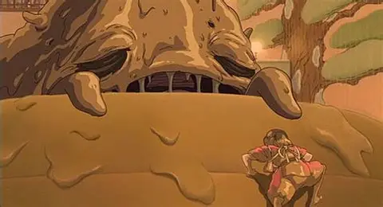
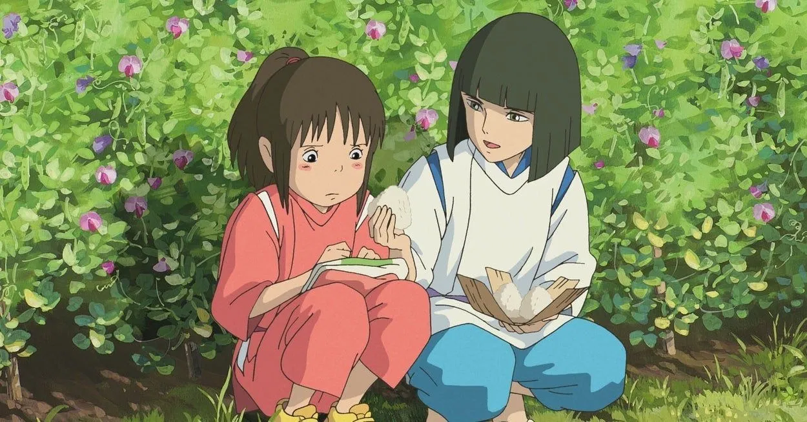
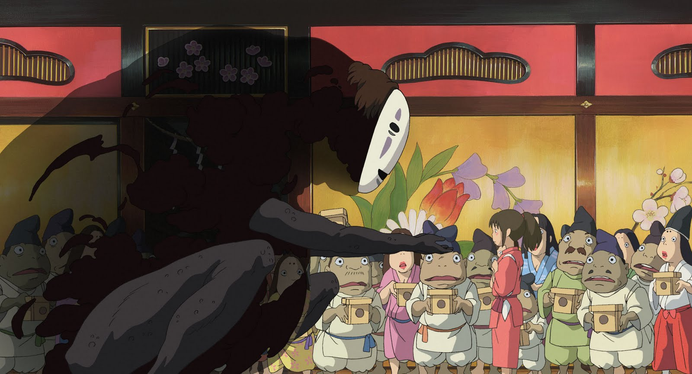
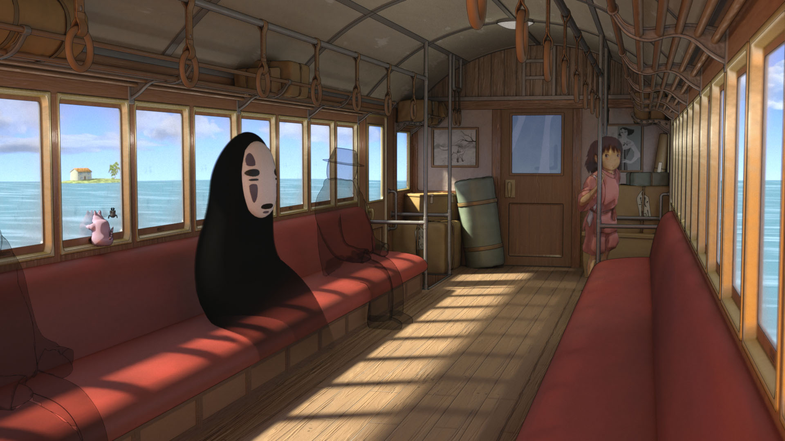

Note : 4/5
Une masterclass visuelle et narrative. Une histoire d'une beauté rare, portée par des personnages inoubliables et une identité visuelle hors du commun. Je dois des excuses au Studio Ghibli.
⚠️ Attention : cette critique contient des spoilers majeurs sur le film Spirited Away
L'histoire de Chihiro
Le film suit Chihiro, une fillette de dix ans qui bascule dans le monde des esprits lors d'un déménagement en famille. Ses parents sont transformés en porcs par la sorcière Yubaba, et Chihiro n'a d'autre choix que de trouver du travail dans le Palais des Bains de la sorcière pour survivre dans ce monde qui lui est étranger et, surtout, pour ramener ses parents et regagner le monde des humains.
Une lettre d'excuses au Studio Ghibli
Je tiens à m'excuser sincèrement pour tous les jugements que j'ai pu formuler sur ce studio, et sur ce film. Quand on me parlait du Studio Ghibli, j'étais réticent. Je pensais que leurs films étaient surcotés, tout le monde en parlait comme si chaque sortie était une masterclass absolue, et je trouvais ça démesuré.
C'est le second film Ghibli que je regarde. Et c'est encore une vraie claque, visuelle comme narrative. Je me suis trompé. C'est bien une masterclass.
Un monde goofy, dérangeant et magnifique
L'univers du film est bizarre. Vraiment bizarre. Mais pas de façon négative, c'est un bizarre qui dérange et qui émerveille en même temps. Les personnages sont difformes, les situations sont absurdes, certaines créatures donnent presque mal à l'aise. Et pourtant c'est d'une beauté visuelle constante. Ce mélange-là, ce côté goofy assumé qui cohabite avec quelque chose de profondément beau, c'est une des choses les plus singulières que j'ai vues dans un film d'animation.

La scène du bain : le cœur du film
La scène qui m'a le plus marqué, c'est celle de l'esprit de la rivière, cet homme couvert de boue et de déchets qui débarque aux bains et fait fuir tout le monde tellement il pue. Chihiro est la seule à rester et à le laver. Elle fait des têtes incroyables pendant toute la scène, visiblement dégoûtée, mais elle continue. Elle assure.

Ce qui rend cette scène magnifique, c'est ce qu'elle dit sur Chihiro. Elle est jeune, elle n'a aucune raison de faire ça, et pourtant elle tient. Il y a quelque chose de très fort dans cette image d'une enfant qui surmonte son dégoût par sens du devoir et par générosité. C'est une des scènes les plus simples du film, et probablement une des plus belles.
Chihiro, une héroïne touchante et vraie
Chihiro est touchante à un point rare. Elle ne veut pas abandonner ses parents transformés en cochons, et elle décide de rester seule dans ce monde qu'elle ne comprend pas pour régler ça. On la voit pleurer, avoir peur, être dépassée, et pourtant elle avance. Elle ne devient pas soudainement courageuse et invincible : elle reste une enfant, et c'est exactement ça qui la rend aussi attachante. Elle porte le film sur ses épaules sans jamais en faire trop.

Haku est fondamental pour elle dans ce voyage. Dès le début, j'étais convaincu qu'ils se connaissaient d'avant et qu'ils s'étaient retrouvés par hasard dans ce monde, je suis parti un peu loin dans ma théorie, mais finalement pas tant que ça.
Sans-Visage : une belle idée, une exécution frustrante
Au début, Sans-Visage me donnait de la peine. J'avais clairement l'impression qu'il cherchait à être aimé, reconnu, accepté, une sorte de créature solitaire qui ne sait pas comment exister parmi les autres. C'était touchant, presque mélancolique.

Et puis il a commencé à manger les employés des bains. Et là, j'ai décroché. Pas parce que la violence me dérange, mais parce que cette version du personnage ne m'a rien apporté. Ça ne semblait pas utile au scénario, ça cassait ce qui le rendait intéressant, et sa résolution est aussi rapide qu'expédiée. C'est le personnage du film qui m'a le plus déçu, parce que son potentiel de départ était vraiment là.
Une fin trop rapide pour un monde trop beau
Ma seule vraie frustration sur ce film, c'est sa fin. Pas parce qu'elle est ratée, les arcs sont bouclés, les personnages trouvent leur résolution, c'est cohérent. Mais le rythme s'emballe d'un coup, comme si le scénario voulait en finir, et j'ai eu la sensation d'être propulsé hors de l'histoire alors que j'aurais voulu y rester encore vingt ou trente minutes.

C'est rare de ressentir ça. D'habitude quand un film tire en longueur, on attend la fin. Là c'est l'inverse : j'en voulais encore. Et le fait que la fin soit la partie la plus faible du film, ça laisse forcément un léger goût d'inachevé.
2001. Vraiment.
Ce film est sorti en 2001. Visuellement, narrativement, émotionnellement, c'est une aberration de sortir ça à cette époque. J'ai été surpris du début à la fin, dans le bon sens du terme. Je comprends maintenant pourquoi des générations entières de cinéphiles en parlent avec autant de ferveur. C'était mérité depuis le début. C'est moi qui avais tort.